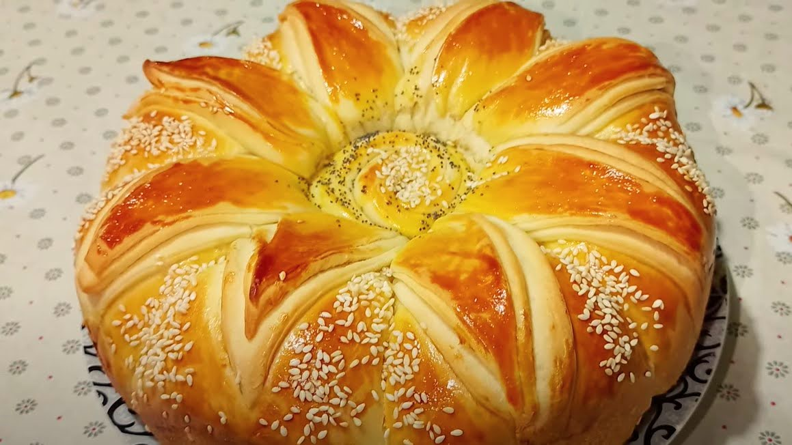

1. Прибавете маята и захарта към топлата вода. Разбъркайте и оставете за около пет минути, докато шупне. Изсипете шупналата мая в купата на робота.
2. Прибавете киселото мляко, солта и олиото. Разбъркайте докато се смесят добре.
3. На порции започнете да прибавяте брашното при пуснати бъркалки. Ще се получи мека топка.
4. Застелете дъното на голяма купа със стреч фолио, така, че краищата да висят. Леко намазнете дъното с малко олио и поставете тестото. Намазнете леко с олио и неговата повърхност. Загърнете с висящите краища и оставете съда с тестото на топло, докато удвои обема си. Може да използвате и фурната, като я включите на програма втасване. Аз правя така.
5. Размесете втасалото тесто за кратко. Ако ви лепне може да добавите една, две супени лъжици брашно. Направете топка.
6. Покрийте дъното на тава с готварска хартия. Диаметърът на дъното на моята тавичка е 24 сантиметра. Поставете тестото по средата и го преплескайте с ръце, докато стигне до стените на съда. Направете няколко разреза с остър нож и оставете вашата лесна питка да втаса отново за около 40 минути.
7. Смесете една чаена лъжичка кисело мляко с една чаена лъжичка олио и намажете втасалата питка.
8. Изпечете вкусната лесна питка на 180 градуса и вентилатор. Фурната затоплете предварително. За около 24 минути е готова.